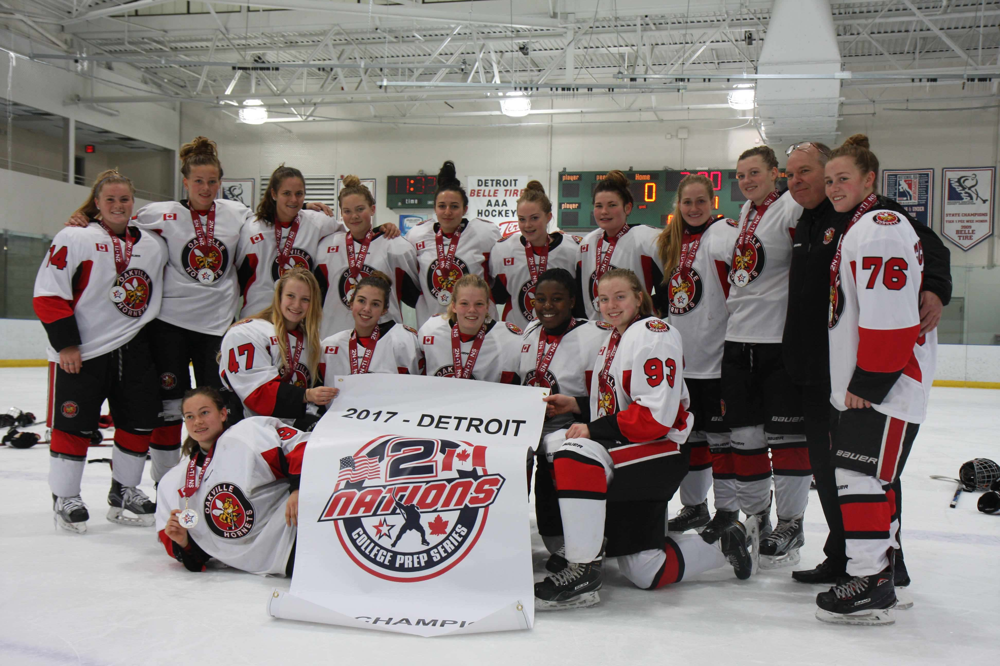

Team memories
Oakville Hornets
A look back at the team and coaches from the original site.

The original site featured the Oakville Hornets Midget AA team, with a focus on competing hard, developing as a team and enjoying the game.
Coaching
The archived page names Jim Langdon as head coach and Domminick Hardy as coach. These details are preserved as historical information.